The Room That's Ready
A film for The Last Preventable Death, the 2026 Scudder Oration on Trauma of the American College of Surgeons.
Made for Dr. Michael Rotondo. Directed, produced, and edited by Eli Harrigan. Original score by Gregg Perea.
3 minutes 30 seconds. No narration. Nothing photographed.

The brief
Dr. Michael Rotondo is a trauma surgeon and professor of surgery at the University of Rochester. In 2026 he gave the Scudder Oration on Trauma, a named lecture of the American College of Surgeons, to a room of about a thousand trauma surgeons. The talk asks what digital transformation could do for injury care: cars that report their own crashes, wearables that report the body inside, a regional coordination center that predicts the injuries before anyone reaches the scene, and a trauma room that is ready before the patient comes through the doors.
He wanted the room to see it rather than hear it described. He asked for a short photoreal film to play inside the lecture, covering the first part of a patient's path: discovery, triage, and transport. It had to be believable to people who have spent their careers in trauma bays and ambulances, and it had to make his argument without a narrator.
He supplied the treatment, the clinical logic, and the names of the systems in his talk. I wrote the shot list, designed the world, generated every frame, built the screens, cut the film, and worked the sound. We made the story decisions together.
The story
A 64-year-old man is driving alone on a rural road before dawn. A deer steps into the headlights, he swerves, and the car goes head-on into a pine. Nobody sees it. The impact happens over black, in sound only.
Then the response starts, and nobody presses a button. The car reports the crash. The watch on his wrist reports his body. A coordination center resolves his location and a drone lifts from its pad in the same instant. His record arrives with one word that matters: he is anticoagulated. The system predicts he will bleed and stages blood at the trauma center before any human has reached him. The drone finds him with a thermal camera. Medics arrive to a scene that is already lit, treat him in the ambulance while the trauma center watches the same numbers, and confirm the prediction. When the doors open, the room is ready, the blood is at the bedside, and the team already knows everything about him. The film ends on one normal heartbeat.
No one speaks. Every piece of information the audience needs arrives on a screen inside the story, on a watch, a dashboard, a console, a tablet, a truck monitor, a wall. The camera selects what to read. The audience puts the chain together themselves, which is the whole point of the talk.
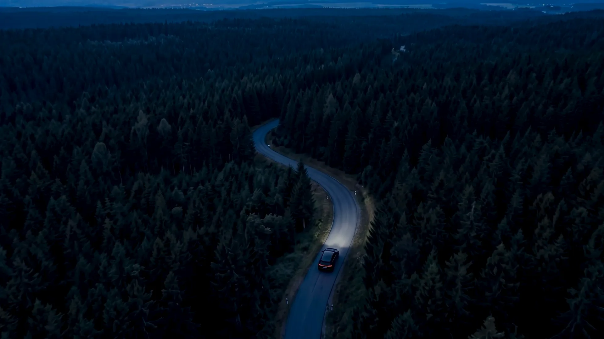


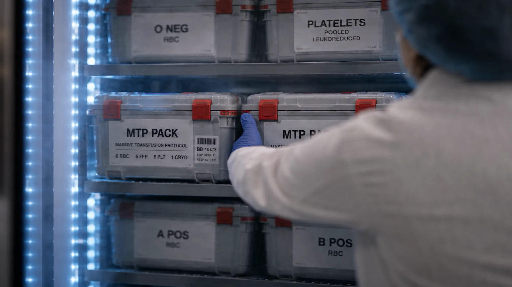

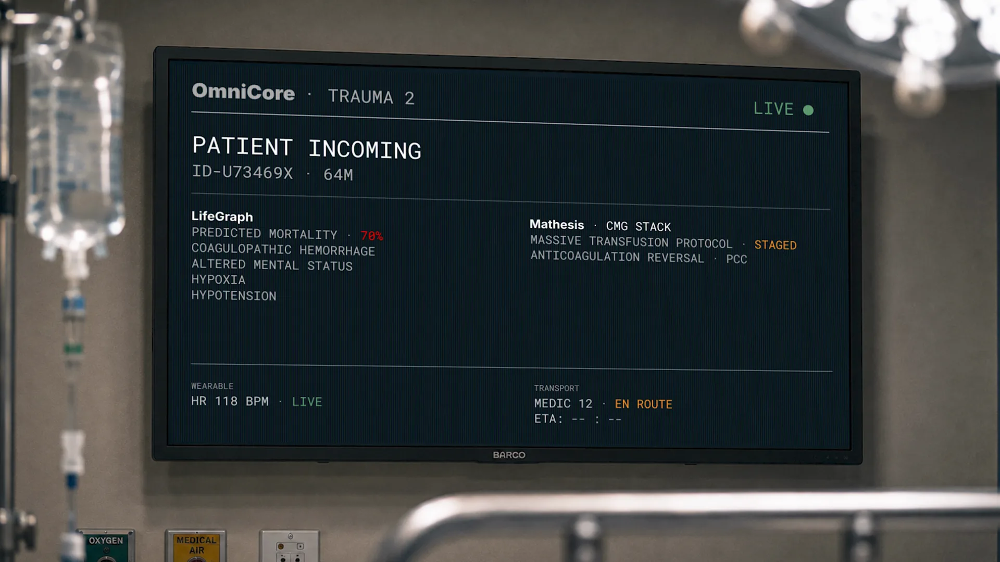
The argument is the structure
The film runs on two causal chains, and every cut answers the question of what happens because of the last thing we saw. The first chain is the blood. His record says he takes a blood thinner, so the system predicts significant hemorrhage, so it stages a massive transfusion protocol, so a sealed case leaves a refrigerator in another building, so it is waiting at the bedside when he arrives. The second chain is the crew. The crash mechanics, his record, and his falling vitals combine into three words on the medics' tablet, altered mental status, hypoxia, hypotension, and that is what they roll on. Anticoagulation never moves the crew. That ruling came from Dr. Rotondo, and it is the kind of detail that separates a film surgeons believe from one they forgive.
We held one rule through every edit: a consequence has to sit next to its cause, and when two things happen because of one order, the cause has to be visible inside the shot. When the room wakes while he is still in the wreck, the wall display lands first with his name, and then the lights come on. The cart in the corridor does not turn the lights on. The order does.
The heartbeat is the film's spine. It enters under the drive, barely audible, jumps at the deer, is gone at impact, and is found again by the drone's thermal camera. It is the last sound in the film, alone over black.

How it was made
Nothing in the film was photographed. Every shot was generated as a still first, judged against a written set of rules, and animated only after it was approved. Generating is the easy part. The work is consistency: the system has no memory between shots, so the car, the road, the drone, the ambulance, the operator, and the light have to be rebuilt from reference every time. Each recurring object was designed once as a clean reference plate and carried into every shot it appears in.
The rules were short and they did not move. Near future, five years out, so everything is the newest real version of itself and the future shows in what happens without a human, not in gadgets. Light locked to the pre-dawn blue hour in every exterior, because time of day is story logic: if the crash is at night and the ambulance arrives at dawn, the film has shown that hours passed, which argues against the thesis. Recent rain, wet asphalt, mist in the low ground. No red cross anywhere, since it is legally protected and reads as a first-aid kit. No holograms, no glowing blue interfaces, no scanning animations. The patient's face is never shown. The drone's nose is a sensor cluster, not a canopy, because nothing human arrives first.
Every prompt was built the same way: a film still rather than a photograph, a named real camera and lens, the real equipment by name, and one motivated light source with everything else falling to shadow. That single-light sentence is what separates a frame from stock photography.
The one exception to the locked light is the last shot. The team turns toward the doors and the first gray-gold dawn is behind them, through the window, about an hour after the crash. That is the film's only time jump, and the story earns it.


The screens
The screens are the film. The vehicles are consequences. Every screen was generated dark and blank, and every word on it was designed and animated by hand afterward, because generated text is never legible and this text had to read from the back of a thousand-seat room in about two seconds.
The screen language was decided once and written down. One monospace typeface, all caps, one voice for the machine. Four colors with fixed meanings: bone white when the machine speaks, red for conclusions and danger only, green for confirmed and live, amber for anything staged and waiting. Red never spreads. A thin bar fills only while the system is analyzing and vanishes the moment the answer lands; facts the system already knew arrive without one. Lines land decisively and hold. Nothing types on, nothing glows, nothing scans. Routine facts cascade fast and significant lines land alone after a beat of stillness, so information arrives at the speed the machine values it.
When the system concludes something, the evidence assembles first. Three source chips tick in one at a time, kinematics, phenome, wearable, hold for a beat, and collapse into a single red line. That behavior debuts at the coordination center, repeats in the truck when the live vitals confirm the prediction and STAGED flips to ACTIVATED, and sits at rest on the wall at the end, where every chip is resolved. The dispatcher, the medics, and the trauma team see near-identical screens, customized to the viewer, because that simultaneity is the thesis.
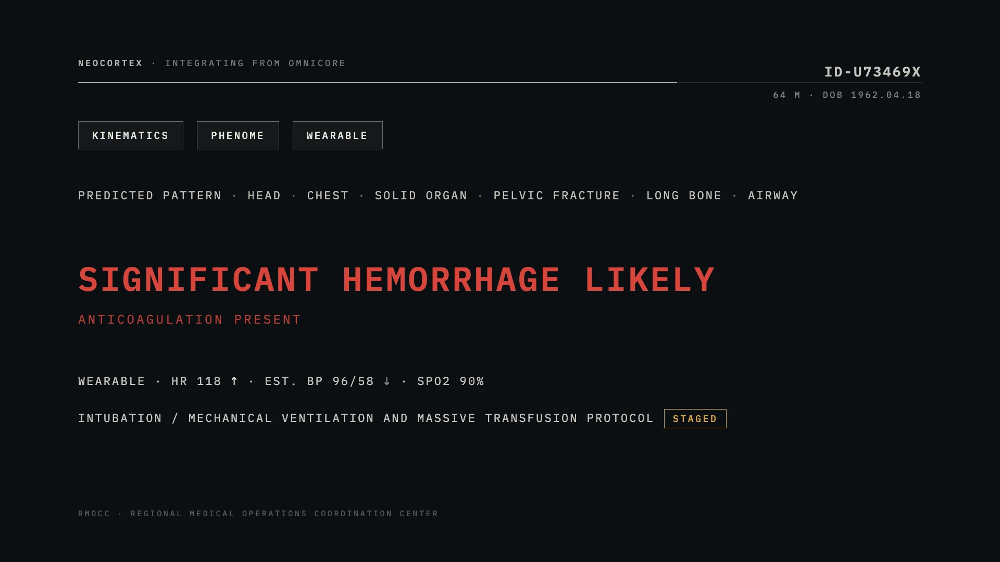
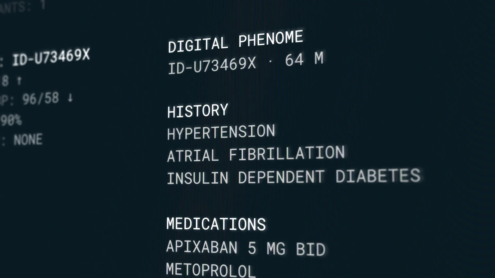
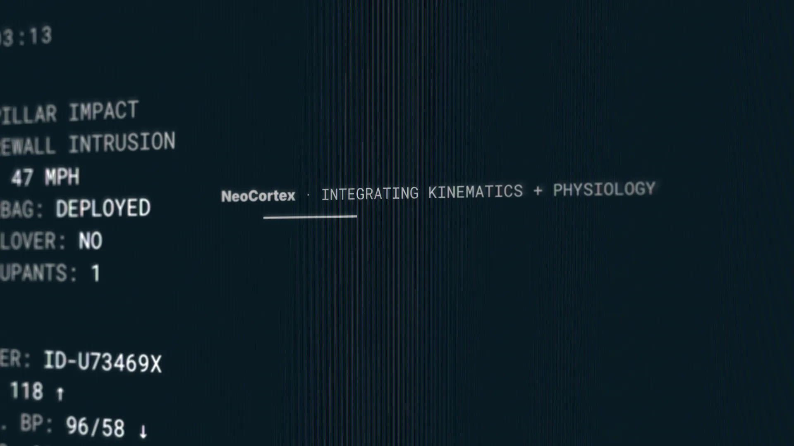
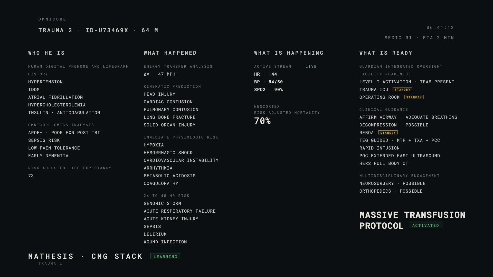
Working with a surgeon
The audience for this film is trained to spot anything false, and so is the client. The process was built around that. Instead of storyboard PDFs, the board lived on a website made for the project. Each shot had its frame, what you see, what you hear, and the text on any screen. Dr. Rotondo could edit the screen text and leave notes directly on the page. Every save was kept as its own version. A banner listed the shots his notes touched, and each one cleared when the change was made. If he changed the text again, the shot reopened on its own.
His corrections went onto the board the same day, and the board's text became the film's screen text. The information-flow diagram above was built because he asked for one, and it turned out to be the document that caught the film's mistakes: a screen with no cause, a conclusion that appeared before its evidence, a word arriving in the ambulance that nobody had sent.

Notes that changed the film
The drone
The proof-of-concept test used a white product-design box with rotors. His note was that it should look like the aircraft fire departments actually fly. It became a working quadcopter in fire-department white and hi-vis orange with a camera gimbal under its nose, no red cross, no canopy, designed once and reused everywhere. It launches itself on detection, with no human in the loop, which was also his note.
The coordination center
The first looks were a big operations floor. His note was that most real dispatch centers are the size of a closet, and to thread the needle between that and the future. The center became a small dark room where one tile on one console turns red and one operator leans in. Nobody else looks up. A regional center sees dozens of crashes a night, and nobody in the future is impressed by the interface.
The blood
The blood bank was first a drawer of loose units. His note was that a massive transfusion protocol calls for a pack of red cells, plasma, platelets, and cryoprecipitate, and that nobody would open it before the patient arrives. It became a sealed, labeled case pulled from an emergency-release refrigerator and wheeled to the trauma room, where it waits unopened at the bedside. The blood beats him there.
Two chains, not one
Late in the storyboard, the medics' tablet fired on the same word as the blood chain. His ruling separated them: anticoagulation drives the blood, and the mechanism plus the predicted physiology is what moves a crew. The tablet screen was rewritten so the crew rolls on three words instead of one.
The voices
The board carried radio lines for the medics and the dispatcher. At the first screening the cut played without them and neither of us missed them. There are no voices in the finished film. The screens say the obvious, and the film says nothing twice.
The number
The truck monitor originally ended on PREDICTED MORTALITY 70% as its hero. A first viewer read it as a verdict at the hopeful end of the film. The number moved earlier, to the prediction where the low point belongs, and the truck's last line became the protocol flipping from STAGED to ACTIVATED.
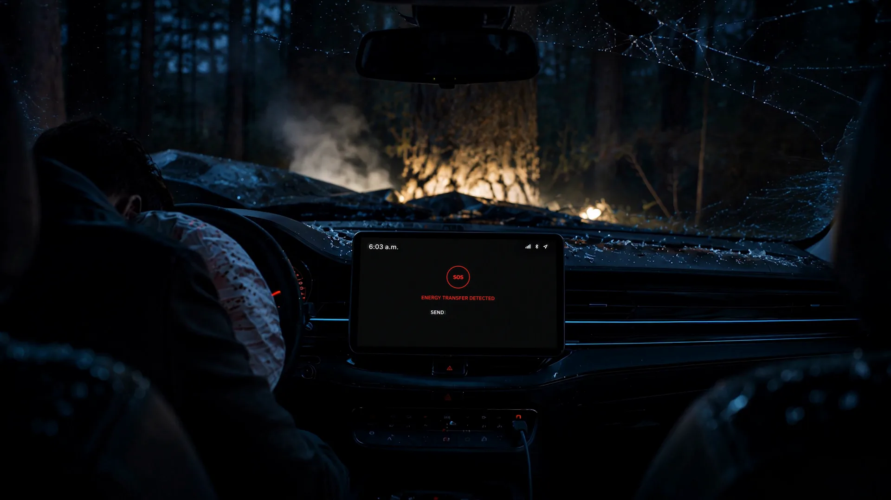

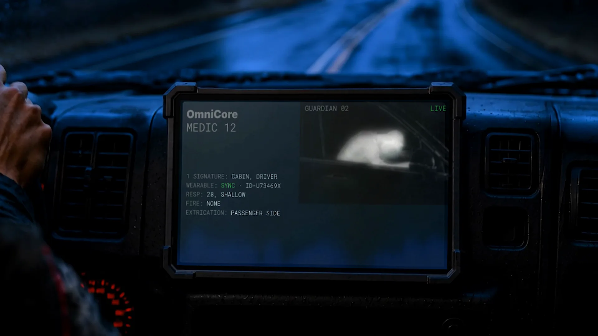

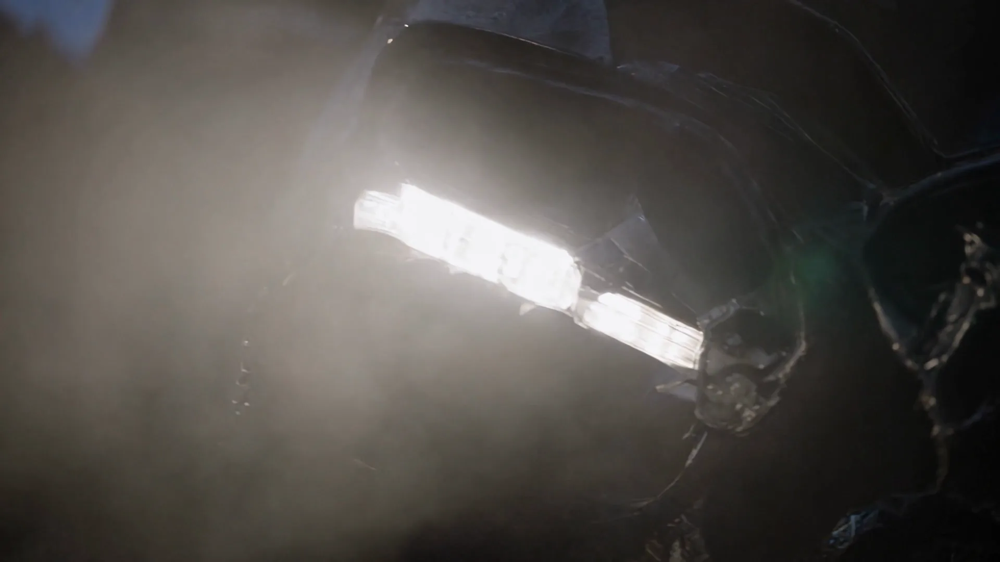
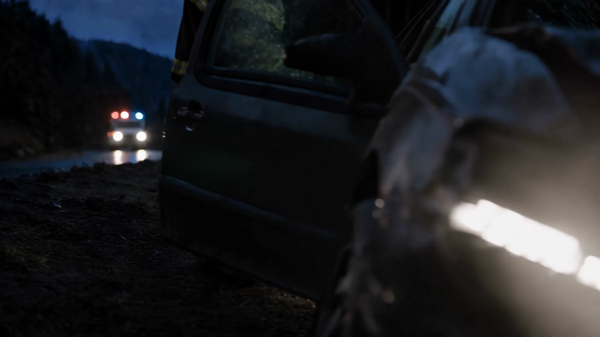

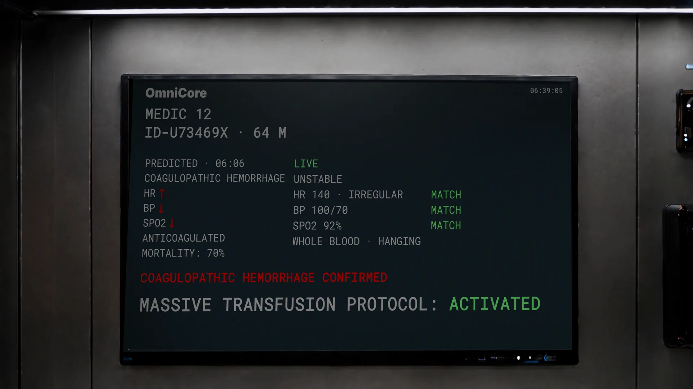

The screening
He watched the first cut twice in his office. The runtime stayed. The voices went. Then he screened it cold for colleagues, with no setup, and they followed the argument and started adding to it, which was the result he wanted from the whole talk. Their notes became the second round: the six system names in his lecture labeled on screen in one wordmark, and six full-resolution frames pulled from the film for the slides that follow it. He then reversed the order of his talk. The film plays first, and he explains what the audience just saw.
There is no title card and no credit inside the film, so nothing stands between his last slide and the road.


Made for Dr. Michael Rotondo.
Directed, produced, and edited by Eli Harrigan.
Original score by Gregg Perea.